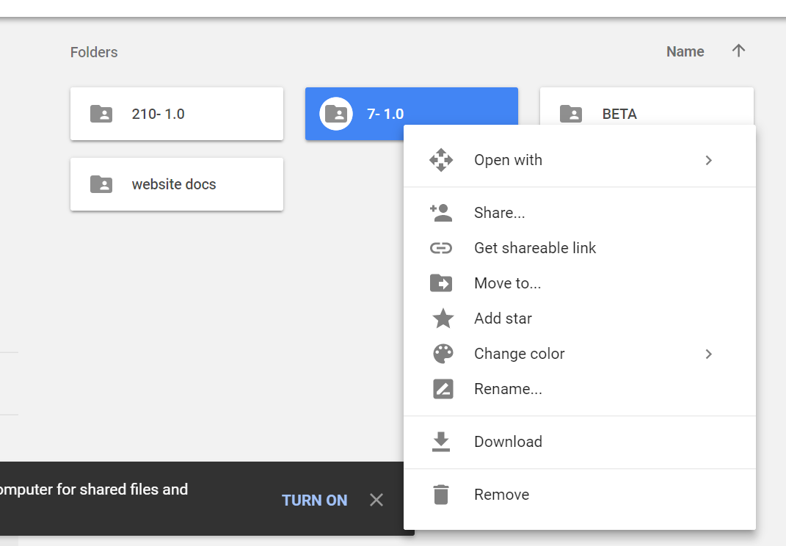

AIBO THERAPY is a full-body motion program built to relieve jitters, a common problem on Sony AIBO models.
Currently, AIBO THERAPY supports two models: the ERS-210 and ERS-7.
You can download both versions
here.
First off... do you have the right materials?
You will need an ERS-210 or ERS-7, a properly formatted PMS (programmable memory stick), and a way to write to your stick (a sony card reader)
If you have all of these things you're all set to go.
Navigate to the Google Drive and right-click on the version of THERAPY you would like to download.

Google Drive will zip the program and drop it into your hard drive once it finishes downloading.
Unzip the file provided.
You should end up with a new file.

Navigate inside both resulting files to this (root) directory:
 On the ERS-210 version, there will be a PHOTO directory.
On the ERS-210 version, there will be a PHOTO directory.
Copy these files onto your memory stick.
Eject your memory stick and then take it out of the card reader. Put the stick in AIBO.
When you turn on AIBO, it will prompt you to remove all accessories. When AIBO stops talking (or when the lights activate on the ERS-210), you can do one of two things.
Say ACTION ONE to begin the full therapy session.
Say ACTION TWO to begin the head only session.
AIBO will run for ten, and then for 20 minutes. A 10 minute session is reccommended.
Hold down AIBO's head to stop it from continuing on during the next cycle of movement.